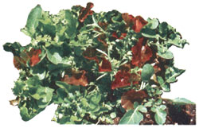

For guaranteed lunch and dinnertime delights this year, take a hint from the French and . . .
The markets of Provence in the sunny southeast of France offer the makings for a very special salad, known locally as mesclun. Though the specific combination of greens contained in mesclun varies with season and gardener, the mix always includes several varieties of tender young lettuce plus an array of spicy greens and herbs such as curly endive, leaf chicory, dandelion, corn salad, and the leaves of rocket, chervil, and cress.
That's in France. On this side of the Atlantic our not-so-quaint supermarkets rarely offer anything even approaching an elegant selection of lettuce that's still young and tender. What's more, your friendly Sooper Dooper produce manager probably hasn't even heard of many of the other standard mesclun ingredients.
Ah, but that's where one of the rewards of being a home gardener comes in: Since seed for all the mesclun greens is available through mail-order seed houses, and since there is absolutely nothing tricky about sowing and growing them, you can easily and inexpensively duplicate a bit of the dining elegance of France by planting a premixed salad garden.
Here's how . . .
A big part of the fun of growing mesclun is choosing the varieties of greens you want and then mixing the seed in experimental proportions for planting. Try several combinations of ingredients; the difference in the flavor of the resulting salads will both surprise and delight you. (When mixing the seed, the measurements don't have to be precise; I use the "pinch of this and pinch of that" system and have always obtained excellent results.)
A basic mesclun mix could include as few as four varieties of greens and herbs . . . such as a mix composed of two parts each of curly endive and oak leaf lettuce, combined with one part each of chervil and rocket. Or, if you like to live dangerously, try shooting the works with a mixture of seed chosen from any-or all-of the popular mesclun ingredients.
LETTUCE. To achieve diversity in color and texture, choose two or three of the following:
Oak leaf lettuce is probably the most traditional of all mesclun ingredients. It's not only delicious, but also pretty.
Black-seeded Simpson or other green, looseleaf varieties of lettuce are often included.
Ruby, Merveille des Quatre Saisons, or any other variety of red-leaf lettuce adds an important touch of color to mesclun.
Buttercrunch, Tom Thumb, and other types of Bibb lettuce contribute tender, lightcolored leaves.
Paris White Cos or any romaine lettuce adds a crunchy texture to salads.
GREENS AND HERBS. Choose several varieties from the following possibilities to insure a tangy, spicy flavor:
Green Curled endive is u sually, included in mesclun for its slightly bitter taste and attractive, lacy leaves.
Corn salad (or mache) has a mild flavor that provides a subtle backdrop for the more assertive greens.
Sugarhat and other leaf chicories contribute both tangy taste and firm texture.
Dandelion greens are savory if picked when young, and they contain a bonus of vitamin A.
Rocket ( or roquette) adds a delicious peppery flavor to mesclun.
Chervil has a piquant, licoricelike taste and grows well in the shade of the other greens.
Garden cress (or peppergrass) imparts a spicy snap to the salad mixture.
For the most part, mesclun gardening employs the same techniques used to grow any of the more common salad greens, except that with mesclun the seeds are scattered in wide rows (rather than being sown in a long, thin row) for ease of harvesting when the plants are young and small.
Start by preparing a plot measuring about one by two feet. After turning the soil, dig in some compost . . . then add a little cottonseed meal and bonemeal . . . and finally, rake the area smooth. Now broadcast your mixture of seed thinly over the plot, and finish the planting by sifting a 1/4" layer of soil over the seed. To assure germination and rapid growth, it's important to keep the seedbed moist (but not drenched).
For delicious, tender salads it's vital to pick the greens when they're very young (lettuce, for example, is "done" when it's a mere 3" high). Consequently, mesclun harvesttime comes quickly-only five to six weeks after planting. The best method for gathering, I've found, is simply to pull up whole handfuls of the tiny plants, trim off the roots, wash and dry the leaves, and toss the clean greens into a salad bowl.
The mesclun blend of young lettuce and herbs is so moist and appetizing that very little dressing is needed; in fact, it's delicious with no dressing at all. But when I or mine do want a salad dressing, I use a basic vinaigrette blend composed of three parts olive oil and one part wine vinegar.
After a few plantings, you'll quickly discover your favorite mesclun combination. And when the gardening is done and the salad's on the table, I'm sure that your family and friends will be as delighted as mine were when I decided to experiment with this international appetite delight!
|
 |
|
|